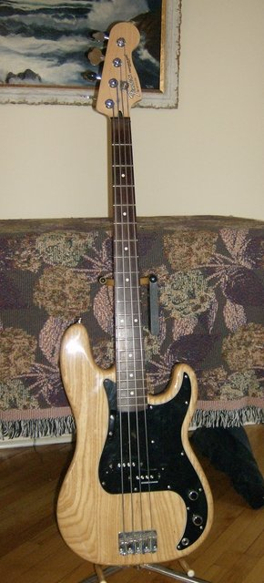

I bought this bass used off a TalkBass member in February 2005. The original owner bought it in October 2004 from Guitar Center. "It is a special run made for Guitar Center. Only Natural finish MIM Precision I've ever seen." The serial number, MZ3xxxxx, means it was built in 2003/2004. Only 250 where made.This is to be my "rock" bass. I disconnected the tone control, since I have more control at the amp anyway! I almost removed the volume control, but I use it to turn the bass off between sets.
| Body | Ash |
| Neck | Maple, Modern “C” Shape, (Satin Polyurethane Finish) |
| Fingerboard | Rosewood (9.5" Radius) |
| Weight | ~9.5 pounds (weighed) |
| No. of Frets | 20 Medium Jumbo Frets |
| Pickups | 1 Standard Precision Bass Split Single-Coil Pickup (Mid) |
| Controls | Volume, Tone |
| Bridge | Standard Vintage Style |
| Machine Heads | Standard |
| Hardware | Chrome |
| Pickguard | 3-Ply White |
| Scale Length | 34" |
| Width at Nut | 1 5/8" |
| Introduced | 7/2001 |
Original owner:
Mine (in roughly chronological order):
Back to seanm.ca